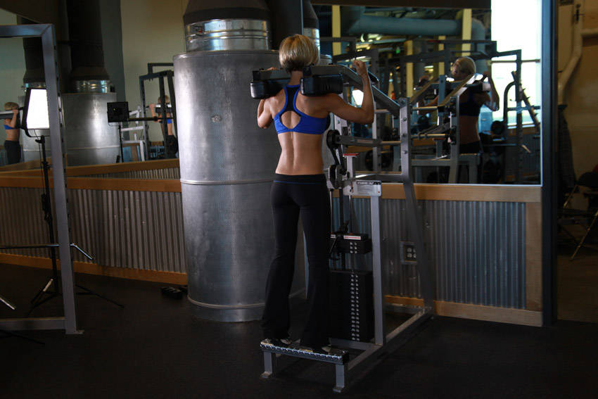
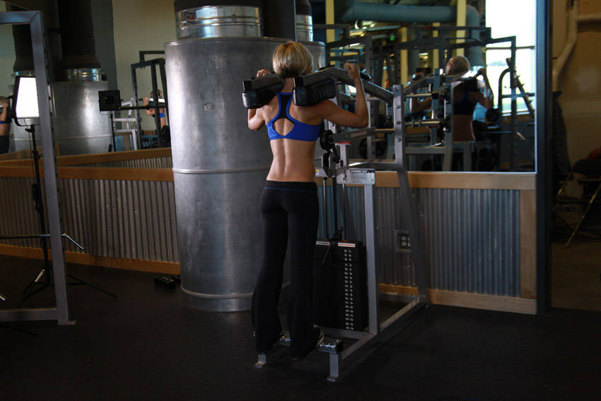
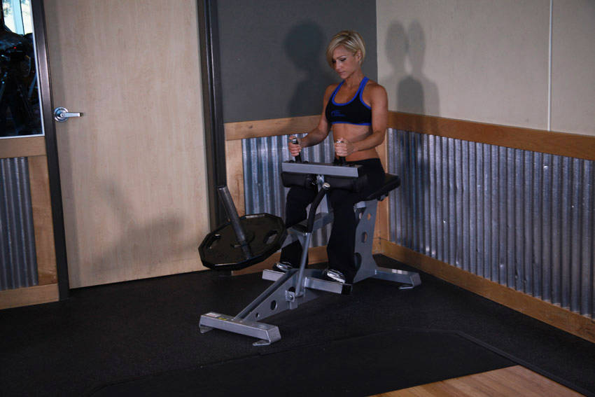
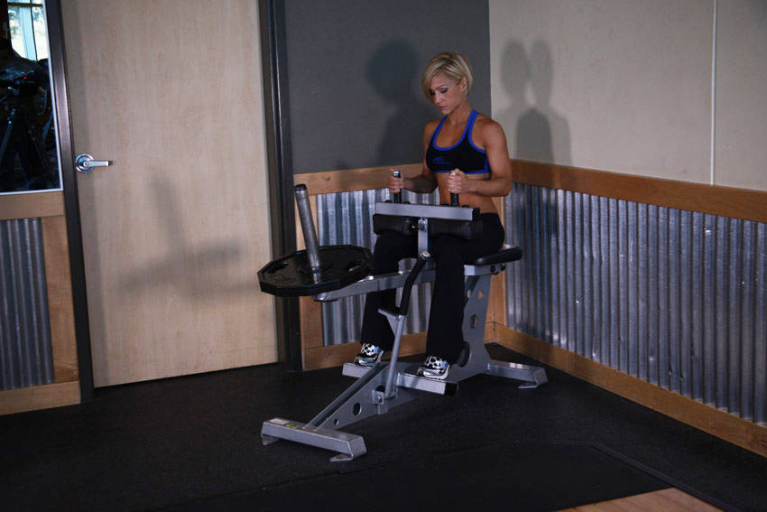
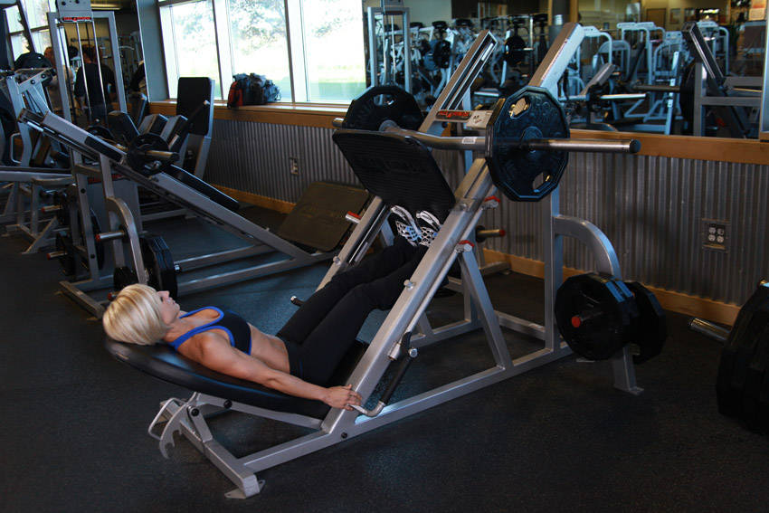
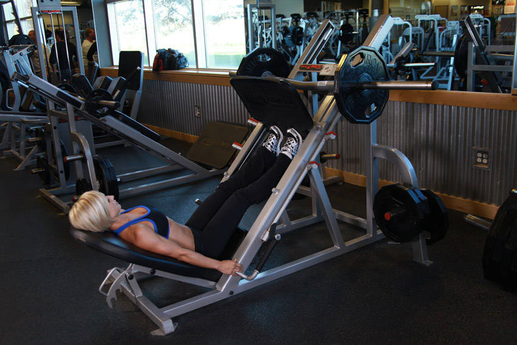
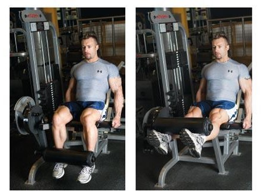
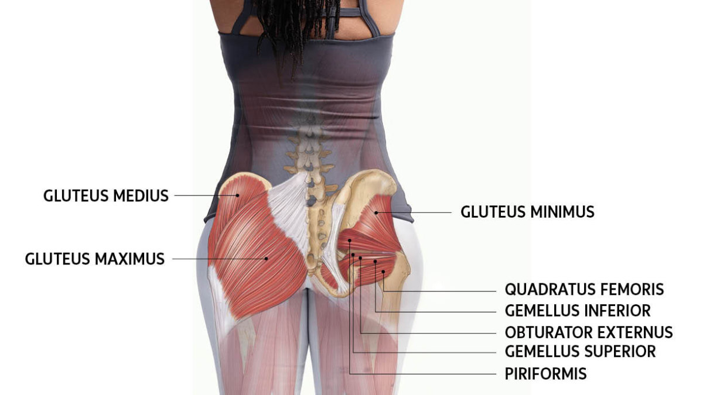
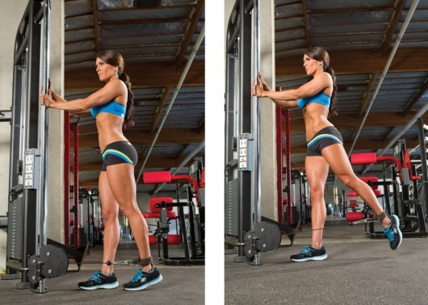

Calves
Exercises
Standing Calf Raises
Type: Strength
Main Muscle Worked:Soleous
Equipment: Machine
Level: Beginner
Standing Calf Raises images
 {kind=link}
{kind=link}
- Adjust the padded lever of the calf raise machine to fit your height.
- Place your shoulders under the pads provided and position your toes facing forward (or using any of the two other positions described at the beginning of the chapter). The balls of your feet should be secured on top of the calf block with the heels extending off it. Push the lever up by extending your hips and knees until your torso is standing erect. The knees should be kept with a slight bend; never locked. Toes should be facing forward, outwards or inwards as described at the beginning of the chapter. This will be your starting position.
- Raise your heels as you breathe out by extending your ankles as high as possible and flexing your calf. Ensure that the knee is kept stationary at all times. There should be no bending at any time. Hold the contracted position by a second before you start to go back down.
- Go back slowly to the starting position as you breathe in by lowering your heels as you bend the ankles until calves are stretched.
- Repeat for the recommended amount of repetitions.
Seated Calf Raise
Type: Strength
Main Muscle Worked:Gastrocnemius
Equipment: Machine
Level: Beginner
Seated Calf Raise imges
 {kind=link}
{kind=link}
- Using a leg press machine, sit down on the machine and place your legs on the platform directly in front of you at a medium (shoulder width) foot stance.
- Lower the safety bars holding the weighted platform in place and press the platform all the way up until your legs are fully extended in front of you without locking your knees. (Note: In some leg press units you can leave the safety bars on for increased safety. If your leg press unit allows for this, then this is the preferred method of performing the exercise.) Your torso and the legs should make perfect 90-degree angle. Now carefully place your toes and balls of your feet on the lower portion of the platform with the heels extending off. Toes should be facing forward, outwards or inwards as described at the beginning of the chapter. This will be your starting position.
- Press on the platform by raising your heels as you breathe out by extending your ankles as high as possible and flexing your calf. Ensure that the knee is kept stationary at all times. There should be no bending at any time. Hold the contracted position by a second before you start to go back down.
- Go back slowly to the starting position as you breathe in by lowering your heels as you bend the ankles until calves are stretched.
- Repeat for the recommended amount of repetitions.
Calf Press On The Leg Press Machine
Type: Strength
Main Muscle Worked:Gastrocnemius
Equipment: Machine
Level: Beginner
Calf Press On The Leg Press Machine imges
 {kind=link}
{kind=link}
- Start with a dumbbell in each hand and your palms facing your torso. Keep your back straight with a slight bend in the knees and bend forward at the waist. Your torso should be almost parallel to the floor. Make sure to keep your head up. Your upper arms should be close to your torso and parallel to the floor. Your forearms should be pointed towards the floor as you hold the weights. There should be a 90-degree angle formed between your forearm and upper arm. This is your starting position.
- Now, while keeping your upper arms stationary, exhale and use your triceps to lift the weights until the arm is fully extended. Focus on moving the forearm.
- After a brief pause at the top contraction, inhale and slowly lower the dumbbells back down to the starting position.
- Repeat the movement for the prescribed amount of repetitions.
Quadriceps
Exercises
Walking Lunges
Type: Strength
Main Muscle Worked: RECTUS FEMORIS
Equipment: Dumbbell
Level: Beginner
walking launges images
.jpg)
.jpg)
instructions
- Stand with your torso upright holding two dumbbells in your hands by your sides.
This will be your starting position - Step forward with your right leg around 2 feet or so from the foot being left stationary behind and lower your upper body down,
while keeping the torso upright and maintaining balance. Inhale as you go down.
Note: As in the other exercises, do not allow your knee to go forward beyond your toes as you come down,
as this will put undue stress on the knee joint. Make sure that you keep your front shin perpendicular to the ground - Using mainly the heel of your foot, push up and go back to the starting position as you exhale
- Repeat the movement for the recommended amount of repetitions and then perform with the left leg.
The Power Leg Extension
Type: Strength
Main Muscle Worked:Vastus Medialis
Equipment: Dumbbell
Level: Beginner
The Power Leg Extension image
{kind=link}
- For this exercise you will need to use a leg extension machine. First choose your weight and sit
on the machine with your legs under the pad (feet pointed forward) and the hands holding the side bars.
This will be your starting position. Tip: You will need to adjust the pad so that it falls on top of your
lower leg (just above your feet). Also, make sure that your legs form a 90-degree angle between the lower and
upper leg. If the angle is less than 90-degrees then that means the knee is over the toes which in turn creates
undue stress at the knee joint. If the machine is designed that way, either look for another machine or just make
sure that when you start executing the exercise you stop going down once you hit the 90-degree angle. - Using your quadriceps, extend your legs to the maximum as you exhale.
Ensure that the rest of the body remains stationary on the seat. Pause a second on the contracted position. - Slowly lower the weight back to the original position as you inhale,
ensuring that you do not go past the 90-degree angle limit. - Repeat for the recommended amount of times.
instructions
Glutes

Exercises
Side-lying Hip Abduction
Type: Strength
Main Muscle Worked:gluteue medius
Equipment: other
Level: Intermediate
Side-lying Hip Abduction images
{kind=link}
instructions
- Lie on your side with your hips stacked on top of each other. Position your top leg behind your
front leg by about 5 degrees, so your top heel is behind you. - Keeping your core engaged and your knee straight, lift your top ankle up toward the ceiling without
moving your pelvis at all. Brace yourself with your hands or elbows as needed. - Return your top foot to the starting position and continue, maintaining a slow and steady pace, and
perfect, controlled form.
Barbell Hip Thrust
Type: Powerlifting
Main Muscle Worked: Glutes medius
Equipment: Barbell
Level: Intermediate
Barbell Hip Thrust images

instructions
- Begin seated on the ground with a bench directly behind you. Have a loaded barbell over your legs.
Using a fat bar or having a pad on the bar can greatly reduce the discomfort caused by this exercise. - Roll the bar so that it is directly above your hips, and lean back against the bench so that your
shoulder blades are near the top of it. - Begin the movement by driving through your feet, extending your hips vertically through the bar. Your weight
should be supported by your shoulder blades and your feet. Extend as far as possible, then reverse the motion to
return to the starting position.